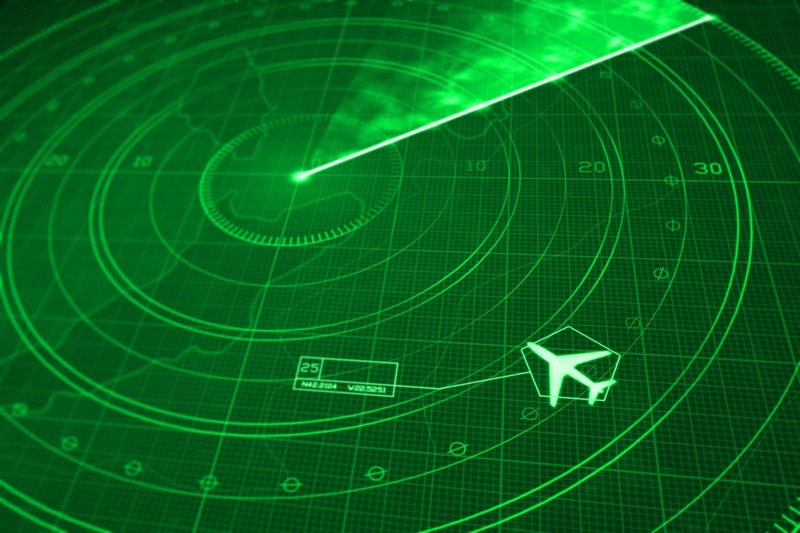
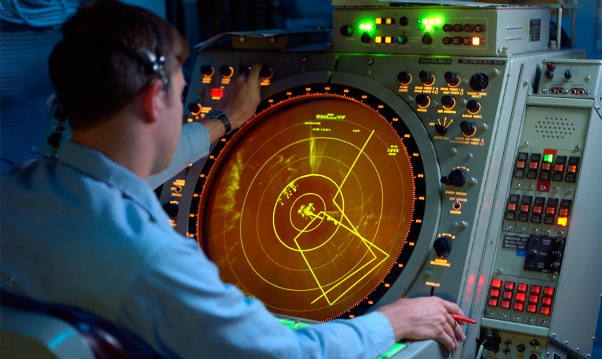
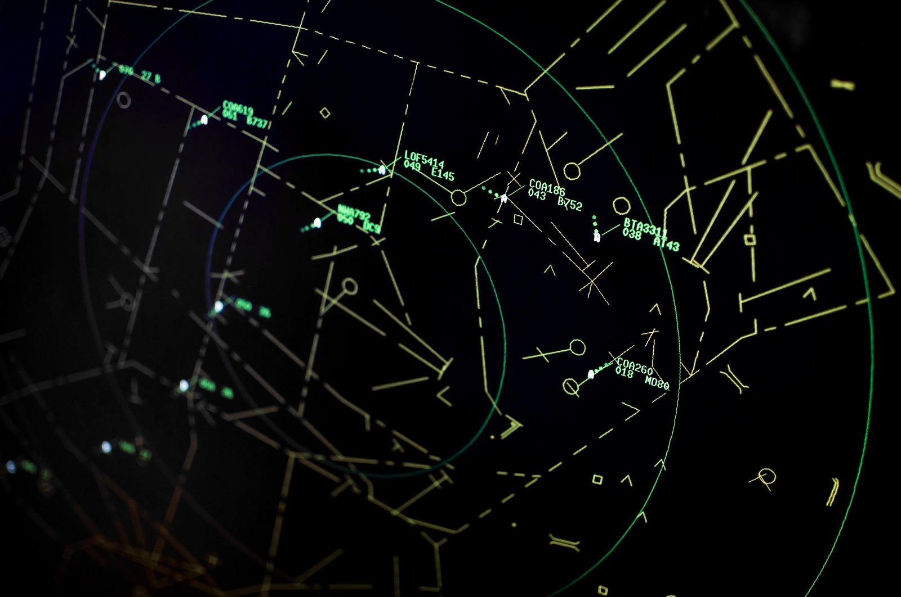
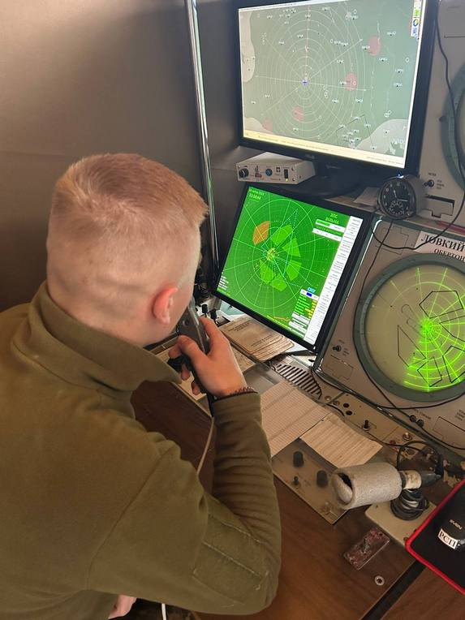
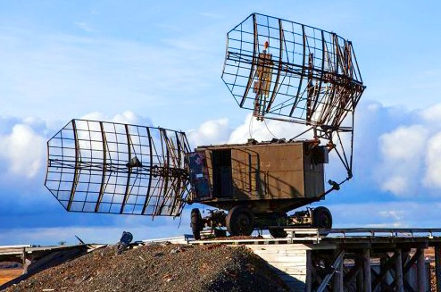
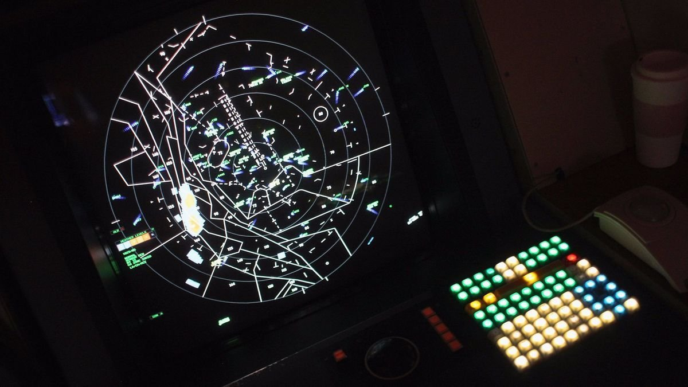
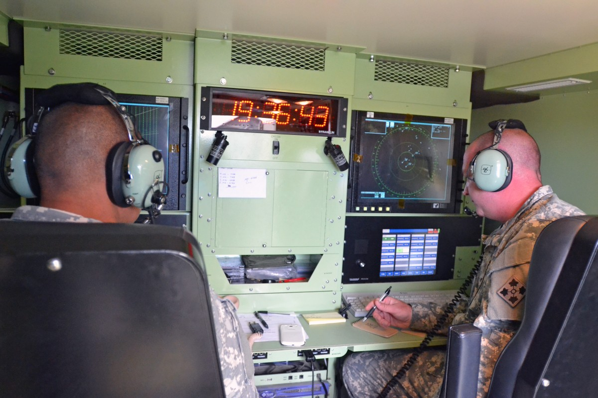
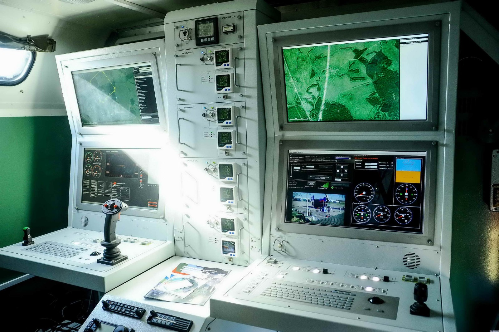
РТЗ - радіотехнічне забезпечення.
Хочеш навчитися “чути” небо? Розуміти, як радіохвиля перетворюється на точну відстань, курс та безпечну посадку - навіть у тумані, вночі та у складній обстановці. РТЗ – це про тих, хто вміє читати ефір та керувати точністю там, де ціна помилки надто висока.
На нашій спеціалізації ти освоїш те, що виглядає як магія, але працює за законами фізики та математики. Ми вчимо курсантів чітко та впевнено працювати з радіохвилями: приймати, аналізувати, вимірювати, знаходити закономірності та витягувати “сенс” із сигналу. Ти навчишся працювати зі складною радіотехнічною апаратурою, з вимірювальними приладами, датчиками, тестовими стендами, проводити діагностику та налаштування, знаходити несправності та повертати систему до ладу.
РТЗ - це обладнання, яке допомагає авіації та аеродромам бачити обстановку, тримати зв'язок, забезпечувати навігацію та посадку так, щоб літак впевнено прийшов на глісаду та сів безпечно. Випускники вміють налагоджувати, обслуговувати та модернізувати радіотехнічні комплекси - і тому залишаються потрібними як у військах, так і в цивільних структурах. А ще це професія для тих, хто любить техніку та поважає точність: служба виходить цікавою, живою, динамічною - із завданнями, де завжди є сенс та результат.
АСУ - автоматизовані системи управління
Хочеш бачити картину цілком - і бути тим, хто перетворює хаос даних на зрозуміле рішення? АСУ - це «нервова система» управління: тут збирають інформацію, об’єднують підрозділи в єдине ціле й забезпечують, щоб командування отримувало точні дані вчасно, а сили діяли злагоджено.
На спеціалізації АСУ ти навчишся створювати та обслуговувати системи, які приймають потоки даних від різних елементів - зокрема від підрозділів радіотехнічних військ і зенітних ракетних військ, від постів спостереження, засобів розвідки та контролю обстановки. Ти розберешся, як інформація проходить шлях «від датчика й станції» до екрана, карти та команди: як усе це поєднується, перевіряється, фільтрується й відображається так, щоб рішення було швидким і правильним.
АСУ - це про зв’язок і взаємодію. Ти опануєш основи мереж і обміну даними, підключення різнорідних систем, стійку передачу інформації, а також принципи захисту та надійності - щоб система працювала навіть у складних умовах. Ми навчаємо не просто «натискати кнопки», а розуміти, як усе влаштовано зсередини: як побудовані контури управління, як створюється єдине інформаційне середовище, як правильно організувати роботу вузлів і каналів.
Випускники АСУ - це фахівці, які вміють робити управління швидким і точним: забезпечувати інформацією,
узгоджувати дії,
підтримувати стійку роботу комплексів. Це навички, які високо цінуються як в армії, так і в цивільних
структурах - в ІТ,
зв’язку, промисловій автоматизації, системній інтеграції. А головне - це напрям для тих, хто любить
складні системи й хоче
бути в центрі процесів: там, де інформація перетворюється на дії.
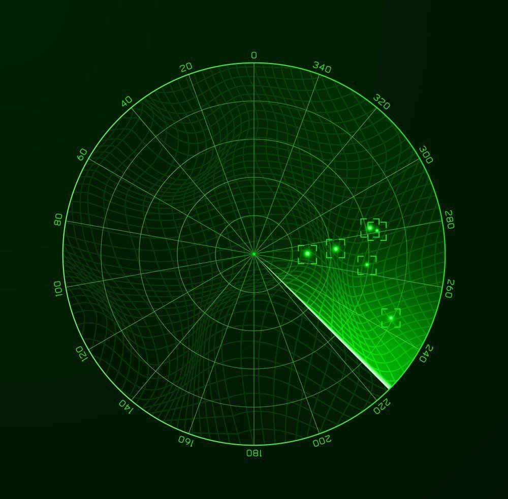
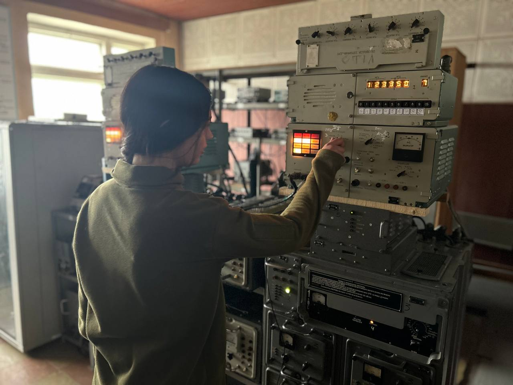
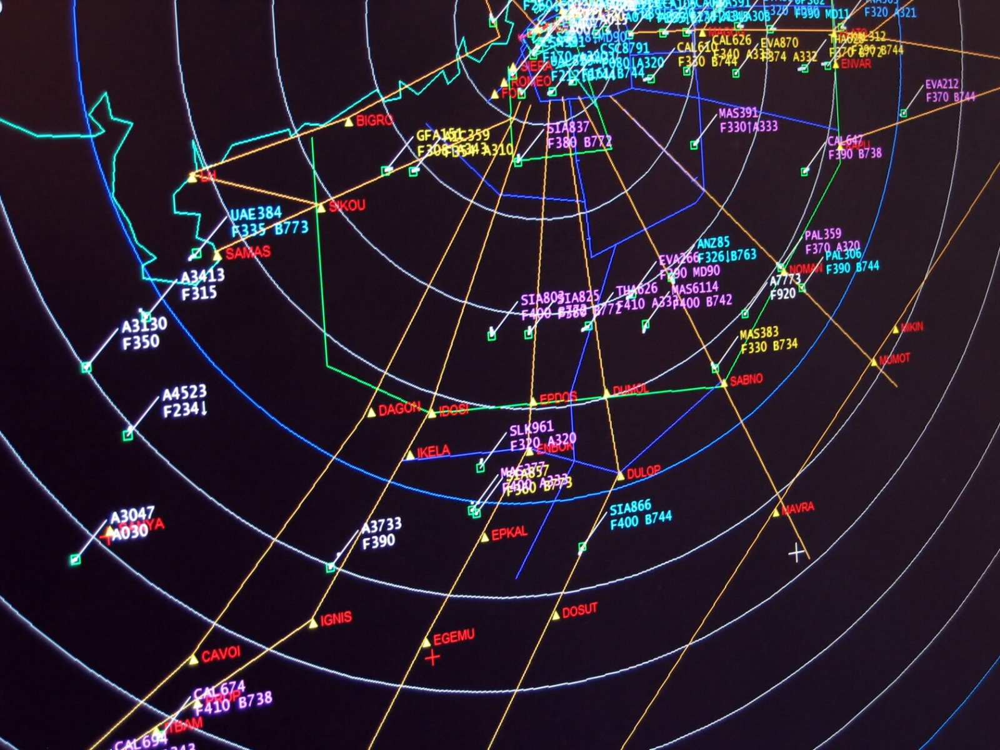
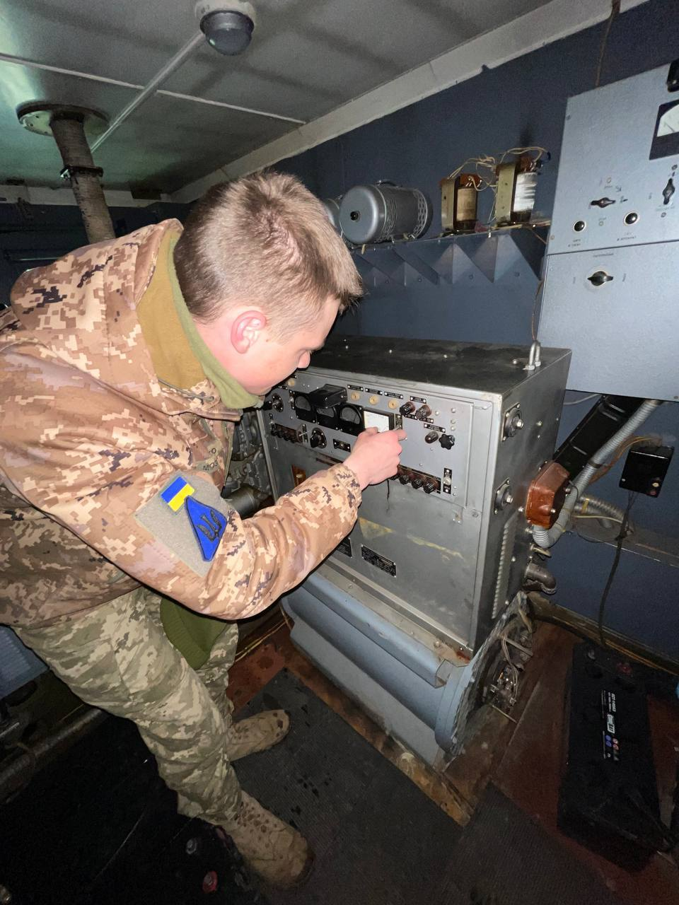
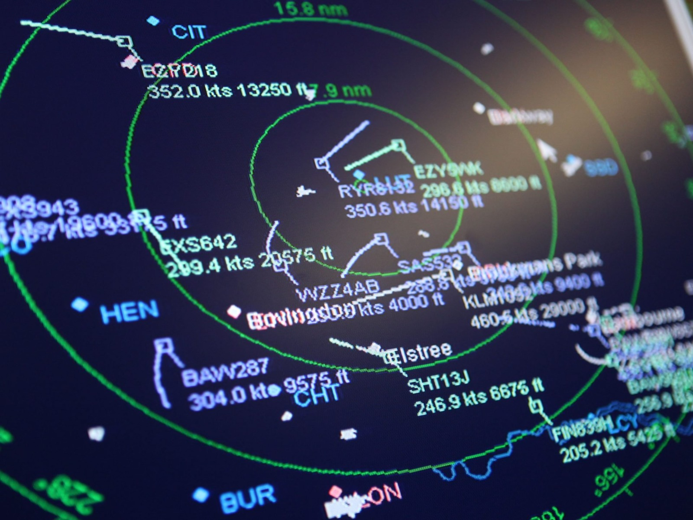
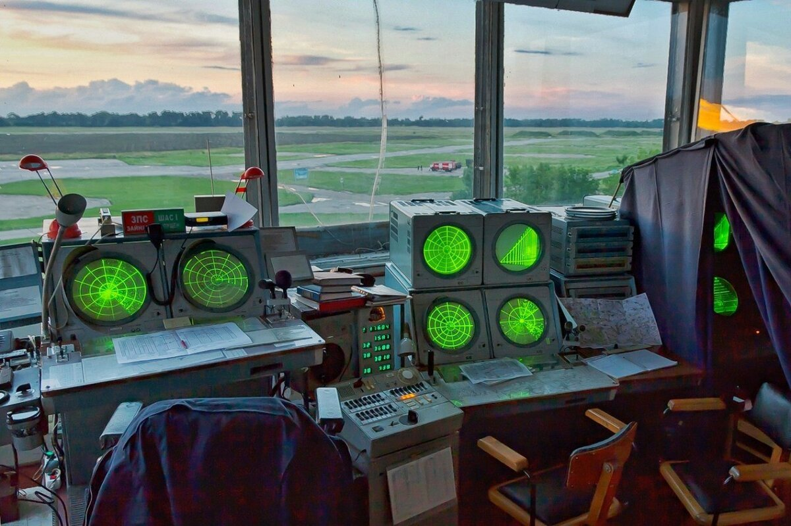
Сьогодні захист неба - це битва технологій та інтелекту. Стань тим, хто забезпечує цю перевагу. Опановуй РТЗ або АСУ, навчись керувати інформацією та сигналами, що рятують життя. Будуй кар’єру в сучасних Збройних Силах України!